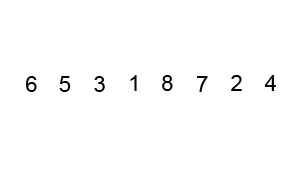
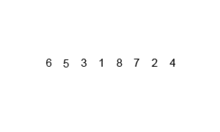
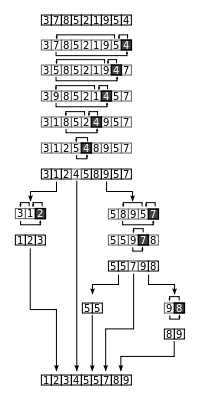
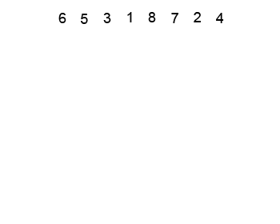
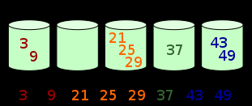

本文是基于 《算法》 一书 中排序章节的总结。
冒泡排序 思路:交换不是正确顺序的相邻元素,每一次排出一个最大或最小值.
时间复杂度:O(n^2)

选择排序 思路:每次循环从无序区选出一个最大或最小值放入有序区.
时间复杂度:O(n^2)
插入排序 思路:每次选择一个元素插入有序区.
实际开发中在小规模范围上与O(n^2)相关算法比较其排序效率更高.
伪码
1 2 3 4 5 6 7 8 9 i ← 1 while i < length(A) j ← i while j > 0 and A[j-1] > A[j] swap A[j] and A[j-1] j ← j - 1 end while i ← i + 1 end while
实现源码:
1 2 3 4 5 6 7 8 9 10 11 12 13 14 15 16 17 18 19 20 21 22 23 24 <?php class InsertionSort public function sort (&$arr ) { $arrLength = count ($arr ); for ($i = 1 ; $i < $arrLength ; $i ++) { for ($j = $i ; $j > 0 ;$j --){ if ($arr [$j ] >= $arr [$j - 1 ]) { break ; } $this ->swap ($arr [$j ], $arr [$j -1 ]); } } } private function swap (&$left , &$right ) { $tmp = $left ; $left = $right ; $right = $tmp ; } }
归并排序 思路:将要排序数组分裂到最小单元,与相邻数组元素进行排序然后合并,递归进行此操作,最终排序并合并所有元素.

归并排序的思想可以用于大文件在少量内存中排序.例如如何在100M内存当中排序1000M文件.1000M分成10份,每份加载内存按照归并排序.形成10份有序的文件后,创建10个指针每个指针指向这10个有序的文件缓存,每个指针加载10M文件到内存中,然后这10个指针指向的数据开使排序,按照排序结果写入指针指向最大或最小的数据,指针指向的缓存为空后然后在不停的加载文件.
伪码:
1 2 3 4 5 6 7 8 9 10 11 12 13 14 15 16 17 18 19 20 21 22 function merge_sort(list m) // Base case. A list of zero or one elements is sorted, by definition. if length of m ≤ 1 then return m // Recursive case. First, divide the list into equal-sized sublists // consisting of the first half and second half of the list. // This assumes lists start at index 0. var left := empty list var right := empty list for each x with index i in m do if i < (length of m)/2 then add x to left else add x to right // Recursively sort both sublists. left := merge_sort(left) right := merge_sort(right) // Then merge the now-sorted sublists. return merge(left, right)
1 2 3 4 5 6 7 8 9 10 11 12 13 14 15 16 17 18 19 20 21 function merge(left, right) var result := empty list while left is not empty and right is not empty do if first(left) ≤ first(right) then append first(left) to result left := rest(left) else append first(right) to result right := rest(right) // Either left or right may have elements left; consume them. // (Only one of the following loops will actually be entered.) while left is not empty do append first(left) to result left := rest(left) while right is not empty do append first(right) to result right := rest(right) return result
快速排序 经典快排思路:从数组选择最后一个元素,分成两个区间大于等于元素区间和小于元素区间,然后进行递归排序.

经典快排伪码:
1 2 3 4 5 6 7 8 9 10 11 12 13 14 15 algorithm quicksort(A, lo, hi) is if lo < hi then p := partition(A, lo, hi) quicksort(A, lo, p - 1) quicksort(A, p + 1, hi) algorithm partition(A, lo, hi) is pivot := A[hi] i := lo for j := lo to hi - 1 do if A[j] < pivot then swap A[i] with A[j] i := i + 1 swap A[i] with A[hi] return i
经典快排详细实现代码
1 2 3 4 5 6 7 8 9 10 11 12 13 14 15 16 17 18 19 20 21 22 23 24 25 26 27 28 29 30 31 32 33 34 35 36 37 38 <?php class QucikSort public function actionQuickSort ($arr { $this ->quickSort ($arr , 0 , count ($arr ) -1 ); } private function quickSort (&$arr , $low , $high ) { if ($low < $high ) { $pos = $this ->partition ($arr , $low , $high ); $this ->quickSort ($arr , $low , $pos - 1 ); $this ->quickSort ($arr , $pos + 1 , $high ); } } private function partition (&$arr , $low , $high ) { $lowPartition = $low ; $partitionVar = $high ; for ($highPartition = $low ; $highPartition < $high ; $highPartition ++) { if ($arr [$highPartition ] < $arr [$partitionVar ]) { $tmp = $arr [$lowPartition ]; $arr [$lowPartition ] = $arr [$highPartition ]; $arr [$highPartition ] = $tmp ; $lowPartition ++; } } $tmp = $arr [$lowPartition ]; $arr [$lowPartition ] = $arr [$partitionVar ]; $arr [$partitionVar ] = $tmp ; return $lowPartition ; } }
第一种改进思路伪码:
1 2 3 4 5 6 7 8 9 10 11 12 13 14 15 16 17 18 19 20 21 22 23 algorithm quicksort(A, lo, hi) is if lo < hi then p := partition(A, lo, hi) quicksort(A, lo, p) quicksort(A, p + 1, hi) algorithm partition(A, lo, hi) is pivot := A[lo + (hi - lo) / 2] loop forever while A[lo] < pivot lo := lo + 1 while A[hi] > pivot hi := hi - 1 if lo >= hi then return hi swap A[lo] with A[hi] lo := lo + 1 hi := hi - 1
第二种改进思路实现源码 :
1 2 3 4 5 6 7 8 9 10 11 12 13 14 15 16 17 18 19 20 21 22 23 24 25 26 27 28 29 30 31 32 33 34 35 36 37 38 39 40 41 42 43 44 45 46 47 48 49 50 51 52 <?php class QuickSortImprovement public function actionQuickSort (&$arr ) { $this ->quickSort ($arr , 0 , count ($arr ) -1 ); } private function quickSort (&$arr , $low , $high ) { if ($low < $high ) { $pos = $this ->partition ($arr , $low , $high ); $this ->quickSort ($arr , $low , $pos [0 ]); $this ->quickSort ($arr , $pos [1 ], $high ); } } private function partition (&$arr , $low , $high ) { $lowPartition = $low ; $highPartition = $high - 1 ; $start = $low ; $partitionVar = $arr [$high ]; while ($start <= $highPartition ) { if ($arr [$start ] < $partitionVar ) { $this ->swap ($arr [$start ], $arr [$lowPartition ]); $lowPartition ++; $start = $lowPartition ; } elseif ($arr [$start ] > $partitionVar ) { $this ->swap ($arr [$start ], $arr [$highPartition ]); $highPartition --; } else { $start ++; } } $highPartition += 1 ; $this ->swap ($arr [$highPartition ], $arr [$high ]); return [$lowPartition - 1 , $highPartition + 1 ]; } private function swap (&$left , &$right ) { $tmp = $left ; $left = $right ; $right = $tmp ; } }
堆排序 思路:将数组构建为大根堆(完全二叉树)这个过程称为heapinsert,完全二叉树可以使用数组按顺序存储,数组首位为最大值,每次将首位和大根堆位置最后一位进行交换,选出最大值,大根堆的范围从末尾减少一位,然后把大根堆重新构建(将首位值和左右节点进行比较,如果小往下移,如果最大则不需要变动位置),这个过程称之为heapify,循环执行heapfy后,数组即变为有序数组.

1 2 3 4 5 6 7 8 9 10 11 12 13 14 15 16 17 18 19 20 21 22 23 24 25 26 27 28 29 30 31 32 33 34 35 36 37 38 39 40 41 42 43 44 45 46 47 48 49 50 51 52 53 54 55 56 57 58 59 60 61 62 63 64 65 66 67 68 69 70 71 72 73 74 75 76 77 78 79 80 81 82 83 84 85 86 87 88 89 class HeapSort public function sort (&$arr ) { $max = count ($arr ); $start = 0 ; while ($start < $max ) { $this ->heapInsert ($arr , $start ); $start ++; } $size = $max - 1 ; do { $this ->swap ($arr [0 ], $arr [$size ]); $size --; $this ->heapify ($arr , $size ); } while ($size > 0 ); } public function heapInsert (&$arr , $index ) { $root = $this ->getRoot ($index ); while ($index > 0 ) { if ($arr [$index ] > $arr [$root ]) { $this ->swap ($arr [$index ], $arr [$root ]); } else { return ; } $index = $root ; $root = $this ->getRoot ($index ); } } public function heapify (&$arr , $size ) { $start = 0 ; while ($start <= $size ) { $leftChild = $this ->getLeftChild ($start ); $rightChild = $this ->getRightChild ($start ); $max = $start ; if (($leftChild <= $size ) && ($arr [$start ] < $arr [$leftChild ])) { $max = $leftChild ; } if (($rightChild <= $size ) && ($arr [$leftChild ] < $arr [$rightChild ]) && ($arr [$start ] < $arr [$rightChild ]) ) { $max = $rightChild ; } if ($start == $max ) { return ; } $this ->swap ($arr [$start ], $arr [$max ]); $start = $max ; } } public function getLeftChild ($index { return $index * 2 + 1 ; } public function getRoot ($index { if ($index == 0 ) { return $index ; } return intdiv ($index - 1 , 2 ); } public function getRightChild ($index { return $this ->getLeftChild ($index ) + 1 ; } private function swap (&$left , &$right ) { $tmp = $left ; $left = $right ; $right = $tmp ; } }
二分排序 思路:总体思想利用了插入排序方法,不过定位插入的位置时插入使用二分查找加速了位置定位.但实际上由于插入元素时需要数组内元素的移动,实际上算法并没有加速,反而在最好情况下比插入排序(O(n^2))还要慢 .
1 2 3 4 5 6 7 8 9 10 11 12 13 14 15 16 17 18 19 20 21 22 23 24 25 26 27 28 <?php class BinarySort public function sort (&$nums ) { for ($i = 1 ; $i < count ($nums ); $i ++) { $left = 0 ; $right = $i ; while ($left < $right ) { $mid = $left + intdiv ($right - $left , 2 ); if ($nums [$i ] < $nums [$mid ]) { $right = $mid ; } else { $left = $mid + 1 ; } } $start = $i ; while ($start > $left ) { $temp = $nums [$start ]; $nums [$start ] = $nums [$start - 1 ]; $nums [$start - 1 ] = $temp ; $start --; } } } }
桶排序 思路:构建一个桶将桶按照.

伪码
1 2 3 4 5 6 7 8 function bucketSort(array, k) is buckets ← new array of k empty lists M ← the maximum key value in the array for i = 1 to length(array) do insert array[i] into buckets[floor(k * array[i] / M)] for i = 1 to k do nextSort(buckets[i]) return the concatenation of buckets[1], ...., buckets[k]
实现源码
1 2 3 4 5 6 7 8 9 10 11 12 13 14 15 16 17 18 19 20 21 22 23 24 25 26 27 28 <?php include_once "InsertionSort.php" ;class BucketSort public function sort (&$arr ) { $max = max ($arr ); $bucketRange = 15 ; $range = $max / $bucketRange ; $bucket [$bucketRange ] = []; for ($i = 0 ; $i < count ($arr ); $i ++){ $bucket [floor ($arr [$i ] / $range )][] = $arr [$i ]; } $sortMethod = new InsertionSort (); $arr = []; for ($i = 0 ; $i <= $bucketRange ; $i ++) { if (isset ($bucket [$i ]) && count ($bucket [$i ]) == 0 ) { continue ; } $sortMethod ->sort ($bucket [$i ]); foreach ($bucket [$i ] as $item ) { $arr [] = $item ; } } } }